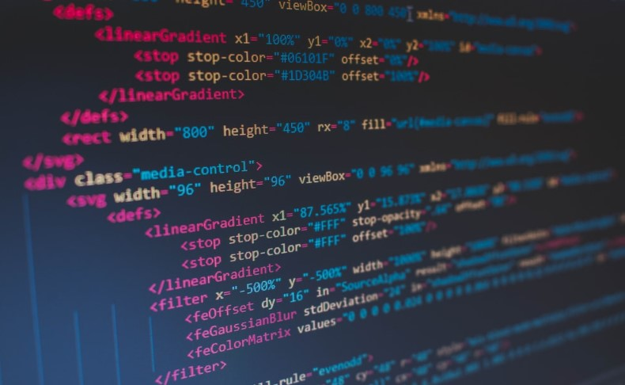

The Great Start...
This is the start of my blog. Here, in this website, I shall discuss about coding principles, programming paradigms, different programming languages like C, C++, Java, Python, etc. I will also be talking about the very basic and principle languages used for Web Dev like HTML5 (Hyper text Markup Language 5), CSS (Cascading Style Sheets), PHP, Javascript, JSON (JavaScript Object Notation), etc. and also some other frameworks such as Nodejs, MongoDB, Reactjs, ReactNative, Vuejs, Vanilla js, and what not. Being a computer science student, I like to keep myself updated with the recent developments in the world of programming and development. It is one of the integral reasons why I started this website so that my knowledge base might help those who are in need of these kinds of information. I will also be discussing about Machine Learning, Artificial Intelligence, Big Data Analytics, Large Scale Data Processing, etc. I am an avid reader of Sci-Fi stuffs and also love to watch movies related to the same. Hence, yes, you all guessed it right! I will also write articles on them in the Blog section of my website. Finally, as already discussed, I am a very philanthropic and philosophical kind of person, who loves to think of new possibilities which can be unfolded in the world by innovative ideas and the right people having like mindset to implement those ideas into practicality. Thus I would like to cover these domains of content writing as well.
Published: 30th Jun 2021
